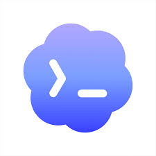

비전공자 대표를 위한 개발 소통 채용 외주 실패 방지 Codex 설치
김대일
㈜게더링 대표이사 김대일
- 비전공자 출신 개발자 · 창업자
- 외주 개발 20건 이상 수행
- 전국 대학 동아리 앱 '마이캠퍼스' 운영
- 광주전남스타트업협회 고문이사
- 스마트인재개발원 및 광주인공지능사관학교 심사위원
1부 · 기초 / 소통
서비스 흐름은 화면·처리·저장·운영이 이어지는 구조다
보는 기준: 기능 · 역할 · 개발 전 고려
프런트: 화면과 입력
API: 요청과 응답 약속
백엔드: 규칙 처리
DB: 기록과 복구
서버: 실행 공간
Git: 코드 원본
배포: 고객 공개
프런트엔드
프런트엔드는 고객이 보고 누르는 화면이다
프런트의 기능 / 역할
화면 표시
입력 받기
API
결과 보여주기
1. 무슨 기능인가고객이 보는 화면, 입력칸, 버튼, 이동 흐름을 만든다
2. 어떤 역할인가고객 행동을 받아 API로 보내고 결과를 다시 보여준다
3. 개발 전 고려필요한 화면, 버튼, 오류 문구, 나중에 자주 바뀔 영역을 정한다
대표는 "무엇이 최신인가"보다 "우리 회사가 1년 뒤에도 고칠 수 있는가"를 본다.
API
API는 화면과 처리부가 주고받는 약속이다
API의 기능 / 역할
화면 정보 받기
필요한 정보 전달
처리 결과 돌려주기
오류 구분
REST
Fetch
GraphQL
OpenAPI 문서
어떤 정보를 보낼지
누가 할 수 있는지
성공하면 무엇을 보여줄지
실패하면 무엇을 알려줄지
고객에게 보일 문구
문제 추적 기록
예약 신청 API 예시화면에서 보내는 정보: 날짜·시간·고객IDAPI 키: 우리 서비스가 보낸 요청인지 확인하는 출입증성공: 예약번호실패: 마감·권한 없음·중복 신청
백엔드
백엔드는 화면 뒤에서 규칙을 처리하는 영역이다
백엔드의 기능 / 역할
권한 확인
규칙 처리
DB 저장
처리 결과 전달
장점: 요즘 트렌드단점: 큰 서비스는 구조를 잡아야 한다
장점: 완성형 웹단점: 자유도가 낮게 느껴질 수 있다
장점: 가벼움단점: 팀 규칙이 없으면 코드가 흩어진다
장점: 팀 개발 구조단점: 초기 학습량이 있다
장점: 기업용 표준단점: MVP에는 무겁게 느껴질 수 있다
장점: 웹 제작 빠름단점: 요즘 채용이 거의 불가능할 수 있다
기술 선택 3문장: 우리 기능의 규칙을 처리할 수 있는가 / 데이터 저장을 안전하게 하는가 / 장애 때 원인을 추적할 수 있는가.
DB
DB는 서비스 정보를 저장하는 회사 장부다
DB의 기능 / 역할
데이터 저장
조회
권한 제한
복구 기준
PostgreSQL
MySQL
MongoDB
Redis
저장
고객, 주문, 결제, 로그가 무엇으로 남는지 정한다.
복구
백업 주기, 보관 위치, 복구 시간, 책임자를 정한다.
권한
누가 조회·수정·삭제하고 원문을 볼 수 있는지 나눈다.
고객 탈퇴 시 삭제할 정보와 결제·정산 기록처럼 보관할 정보를 구분한다.
서버
서버는 서비스가 실제로 돌아가는 운영 공간이다
서버의 기능 / 역할
서비스 실행
접속 처리
백업
장애 알림
AWS
Azure
Naver Cloud
자체 서버
계약 전 확인: 서버 계정 소유자, 월 비용 상한, 백업 위치, 장애 알림 수신자.
Git
Git은 코드 원본과 변경 이력을 보관하는 도구다
Git의 기능 / 역할
변경 이력
원본 보관
되돌리기
협업 기준
GitHub
GitLab
Branch
Commit
배포
배포는 만든 기능을 고객에게 공개하는 절차다
배포의 기능 / 역할
테스트 반영
운영 공개
오픈 확인
되돌리기
테스트 서버
베타 테스트
운영 서버
점검
동작 흐름
버튼 하나는 화면·처리·저장을 함께 움직인다
기능 하나: 역할 / 개발 전 고려
고객 행동
화면 상태
서버 판단
기록과 응답
누가 눌렀나
무슨 값을 보냈나
성공 기준은 뭔가
어디에 기록되나
예: 예약 신청 버튼
고객 클릭 → 중복 예약 차단 → DB 저장 → 관리자 알림 → 성공·실패 화면까지가 한 기능 범위다.
프런트 클릭
API
백엔드 검사
DB 저장
결과 돌려주기
화면 반영
버튼 하나라도 DB 저장, 권한, 알림, 관리자 화면까지 붙으면 별도 기능 범위로 본다.
1부 체크
1부는 개발의 흐름을 보는 시간이다
개발 대화는 기능 · 역할 · 개발 전 고려를 묻는 일이다
고객 행동이 화면에서 시작해 API와 백엔드를 지나 DB에 기록된다.그리고 Git, 서버, 배포가 있어야 실제 서비스로 운영된다.
화면
API
백엔드
DB
Git
배포
2부 · 채용
채용은 우리 서비스에 필요한 기능부터 정리한다
면접 장면
"채팅 기능 해봤습니다"
우리 서비스에 필요한 기능과 연결되지 않으면 판단 기준이 흔들린다.
1. 필요한 기능 정리
우리 서비스에 필요한 기능 경험부터 정리한다
대표 판단먼저 우리 서비스 핵심 기능을 적어야, 후보 경험이 필요한 경험인지 판단할 수 있다.
2. 면접 질문 정리
필요한 기능을 면접 질문으로 바꾼다
대표 판단후보가 말한 프로젝트를 우리에게 필요한 기능 질문으로 좁혀서 본다.
추가 질문 필요: 성공했다는 말만 반복함
실제 경험 신호: 실패·중복·기록까지 설명함
3. 좋은 답변 찾고 이끌기
좋은 답변은 역할과 근거가 보인다
대표 판단 기준고객에게 보이는 실패 화면까지 설명하면 실제 구현 경험에 가깝다.
3. 좋은 답변 찾고 이끌기
작은 상황 질문을 하면 답변이 구체해진다
어떤 화면 · 데이터 · 예외를 먼저 확인할지 묻는다
대표 판단실제 일을 시키지 않고도, 후보가 기능을 어떤 순서로 생각하는지 말로 확인한다.
3. 좋은 답변 찾고 이끌기
포트폴리오는 질문으로 검증한다
면접 질문"이 화면에서 본인이 직접 정한 기준과, 나중에 고친 이유를 하나씩 말해 주세요."
역할·예외·수정 이유를 같이 본다결과물은 있는데 본인 판단을 설명 못 하면 보류
2부 체크
채용 전 이 순서로 정리한다
작성 예시"결제 경험자는 성공보다 실패, 취소, 환불, 중복 결제를 설명할 수 있어야 한다."
3부 · 외주
차 살 때처럼 옵션표와 검수표가 필요하다
외주 발주 장면
"알아서 잘 만들어 주세요"
이 말은 견적, 범위, 검수 기준을 모두 흔든다.
역할 분리
대표가 안 정하면 외주사가 추측한다
대표 질문"이 항목의 최종 결정권자는 누구이고, 변경 시 누가 승인하나요?"
MVP
처음부터 완성품을 외주로 만들려 하지 않는다
대표 질문"이번 버전에서 고객이 반드시 끝까지 해야 하는 1개 흐름은 무엇인가요?"
요구사항
기능명보다 고객 시나리오를 보여준다
문서 공식사용자가 [행동]하면, 성공 시 [결과], 실패 시 [문구]를 보여준다.
검수
검수 기준은 계약 전에 적는다
검수 문장"성공만 동작하면 완료가 아닙니다. 실패·권한·저장까지 확인합니다."
계약
포함과 제외를 같이 써야 분쟁이 줄어든다
관리자 3개
수정 2회
PG 계약
문자 발송비
추가 견적
일정 영향
대표 질문"이 기능은 포함인가요, 제외인가요, 변경 요청인가요?"
소유권
소스코드와 계정은 회사가 소유해야 한다
문서 문장"소스코드, 배포 문서, 서버 접근 권한은 회사 계정으로 이전한다."
유지보수
오픈 이후 비용과 대응 시간을 먼저 정한다
4시간 1차 조치
대표 질문"이건 버그인가요, 신규 기능인가요?"
3부 체크
외주 계약서는 다섯 가지를 확인한다
마지막 확인범위는 포함/제외로, 검수는 실패/권한으로, 소유권은 회사 계정으로, 유지보수는 월 비용으로, 장애는 대응 시간으로 남긴다.
4부 · Codex 설치
Codex 앱은 함께 일하는 개발 도구다
Codex
Projectshomepage-renewalstore-democontract-check
이 폴더가 어떤 프로젝트인지 설명해줘
파일 구조를 읽고 화면, 데이터, 배포 흐름을 요약했습니다.
Step 1
설치 후에는 이런 일을 시켜볼 수 있다
1읽기폴더 구조 설명
2고치기문구와 화면 수정
3확인오류 원인과 테스트
Step 2
설치 전에 ChatGPT 계정이 필요하다

이메일과 비밀번호 확인
브라우저 로그인 가능 여부 확인
Windows 업데이트 확인
Step 3
Codex 앱을 설치한다

Codex
Microsoft Store에서 받기
Step 4
Codex 앱을 ChatGPT 계정과 연동한다
1Codex 앱Sign in with ChatGPT
2브라우저ChatGPT 계정 인증
3앱 복귀워크스페이스 확인
Step 5
먼저 바탕화면에 프로젝트 폴더를 만든다
homepage-renewal
기획서.pdf
대표사진.jpg
로고.png
Step 6
Codex 앱에서 프로젝트 폴더를 추가한다
Codex
Desktop / homepage-renewal
"이 기획서와 사진으로 홈페이지 초안을 만들어줘."
4부 체크
Codex 앱 설치 흐름은 이 순서로 설명한다
1ChatGPT 가입
2Store에서 설치
3ChatGPT 로그인
4프로젝트 폴더 연결
대표가 기억할 문장
"회원가입을 먼저 끝내고, Microsoft Store에서 Codex 앱을 설치한 뒤, 내 프로젝트 폴더를 연결한다."
Closing
대표가 가져갈 6가지
오늘 끝나고 바로 할 일
우리 핵심 기능 3개를 고르고, 각 기능마다 실패 케이스 1개와 외주 계약 문장 1개를 적는다.